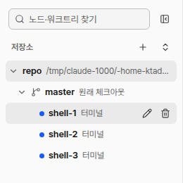
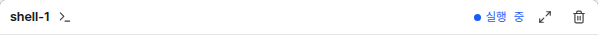
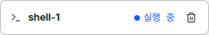

사이드바. 줄에 마우스를 올리면 연필·휴지통문서 ID: M18응답할 곳: 총괄 · loom 총괄연 담당: 코디 · 북마크v1 · 2026-10-21
노드 북마크
사람 요청: “노드 북마크 기능 추가, 헤더, 사이드탭에 북마크 버튼 추가, 사이드탭에 북마크 모아보는 영역 만들어”. 점선이 바뀌는 곳이다. 북마크는 데몬 DB에 남아 브라우저와 Windows 앱이 같은 목록을 본다.
① 지금 화면

표준 카드 머리
심플 카드② 카드 머리 버튼 표준 · 심플 · 크게 보기
표준, 꺼짐
북마크에 더하기
shell-1>_실행 중
ktadev@host:~/repo$
표준, 켜짐
북마크에서 빼기
shell-1>_실행 중
ktadev@host:~/repo$
심플, 꺼짐
>_shell-1실행 중
심플, 켜짐
>_shell-1실행 중
크게 보기, 켜짐
shell-1>_실행 중
- 버튼은 상태 글자 바로 오른쪽, 다른 머리 버튼 왼쪽에 늘 보인다. 꺼지면 빈 책갈피, 켜지면 채운 책갈피다.
- 한 번 누르면 켜고 다시 누르면 끈다. 확인 창은 없다.
- 오른쪽 칸 터미널 머리는 심플 카드와 같은 부품이라 함께 바뀐다.
③ 사이드바 트리 줄 버튼
꺼진 노드에 마우스
master원래 체크아웃
shell-1터미널
shell-2터미널
켜진 노드에 마우스
master원래 체크아웃
shell-1터미널
shell-2터미널
- 지금 연필·휴지통처럼 마우스를 올리거나 줄에 포커스가 있을 때만 보인다. 맨 앞에 책갈피를 더한다.
④ 사이드바 북마크 영역 권장: 「저장소」 위, 접는 절
북마크 3개, shell-1을 고름
노드·워크트리 찾기
북마크
3shell-1repo · master
리뷰어loom · 북마크
loom 총괄loom · main
저장소
repo/home/ktadev/repo
master원래 체크아웃
shell-1터미널
북마크 없음
노드·워크트리 찾기
북마크
노드의 버튼으로 더합니다.
저장소
repo/home/ktadev/repo
접음
노드·워크트리 찾기
북마크
3저장소
repo/home/ktadev/repo
- 줄: 상태 점, 노드 이름, 저장소 · 브랜치. 모든 저장소의 북마크를 북마크한 차례로 보인다.
- 줄을 누르면 트리의 노드 줄을 누를 때와 같다. 노드를 고르고 그래프를 옮긴다. 크게 보기 중이면 그 노드를 크게 본다.
- 줄에 마우스를 올리면 채운 책갈피가 보인다. 누르면 목록에서 뺀다.
- 제목 줄을 누르면 접고 편다. 접은 상태는 이 브라우저에만 남는다. 줄이 많으면 영역 높이를 사이드바의 40%로 두고 안에서 스크롤한다.
- 노드를 지우면 목록에서 바로 빠진다.
승인할 것
| 항목 | 권장안 | 다른 안 |
|---|---|---|
| ②③ 버튼 자리와 모양 | 권장: 그림 그대로. 머리에는 늘 보이고, 트리 줄은 마우스를 올릴 때 | — |
| ④ 영역 자리 | 권장: 찾기 칸 아래, 「저장소」 위의 접는 절 | — |
| ④ 북마크가 없을 때 | 권장: 제목과 안내 한 줄을 보인다. 기능을 찾을 수 있다 | 영역을 숨긴다. 첫 북마크 때 나타난다 |
| ④ 줄 차례 | 권장: 북마크한 차례 | 이름 차례 |